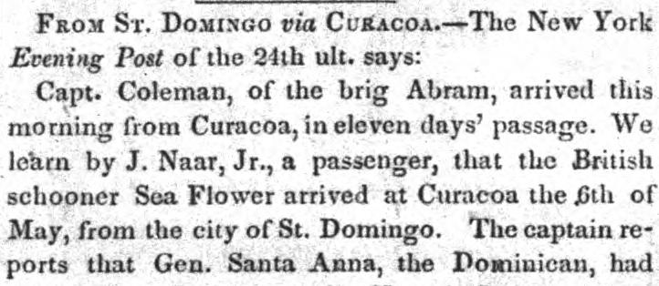

Soulouque, the Haytien President, and his forces from the town ofSoulouque, el presidente haitiano, y sus fuerzas desde la población de
According to the Arkansas State Gazette reporting on information from the Evening Post, Dominican General Santa Anna defeated Haitian President Soulouque and his forces in a severe contest at the town of Azera, driving the Haitians completely out of Dominican territory. The report noted that the retreating Haitians burned Azera and suffered the loss of 500 troops and two principal generals, Geffrad and Paul Jean Jacque. Additionally, the newspaper reported that a severe earthquake had caused considerable damage at Maracaibo.A juicio de la Arkansas State Gazette, con base en informes del Evening Post, el general dominicano Santana derrotó al presidente haitiano Soulouque y a sus huestes en un encarnizado choque en la villa de Azua [nombrada Azera], arrojando enteramente a los haitianos fuera del suelo dominicano. La noticia puntualizaba que los invasores incendiaron Azua en su retirada, sufriendo la pérdida de quinientos soldados y de dos destacados generales, Geffrard y Paul Jean Jacques. Se añadía por otra parte que un violento terremoto ocasionó cuantiosos estragos en Maracaibo.
FULL TEXT:TRADUCCIÓN:
FROM ST. DOMINGO via CURACOA.—The New York Evening Post of the 24th ult. says:DE SANTO DOMINGO vía CURAZAO. —El New York Evening Post del 24 del pasado dice:
Capt. Coleman, of the brig Abram, arrived this morning from Curacoa, in eleven days' passage. We learn by J. Naar, Jr., a passenger, that the British schooner Sea Flower arrived at Curacoa the 6th of May, from the city of St. Domingo. The captain reports that Gen. Santa Anna, the Dominican, hadEl capitán Coleman, del bergantín Abram, llegó esta mañana de Curazao, en travesía de once días. Sabemos por J. Naar, Jr., un pasajero, que la goleta británica Sea Flower llegó a Curazao el 6 de mayo, procedente de la ciudad de Santo Domingo. El capitán informa que el general Santa Anna, el dominicano, había
Arkansas State Gazette. Little Rock, Ark., June 14, 1849.
See the original at the Library of CongressVer el original en la Biblioteca del Congreso
Published by: W.E. Woodruff and T.J. Pew, 1836-1850.Publicado por: W.E. Woodruff and T.J. Pew, 1836-1850.
Edition: Edition 1Edición: edición 1
Page: 3Página: 3
Frequency: weekly (1836–1850)Frecuencia: semanal (1836–1850)
Collection: Chronicling America, Library of CongressColección: Chronicling America, de la Biblioteca del Congreso
LCCN: sn82016481LCCN: sn82016481
ISSN: 2638-1869ISSN: 2638-1869
OCLC: 9528259OCLC: 9528259
Rights: public domain, according to the Library of CongressDerechos: dominio público, según la Biblioteca del Congreso